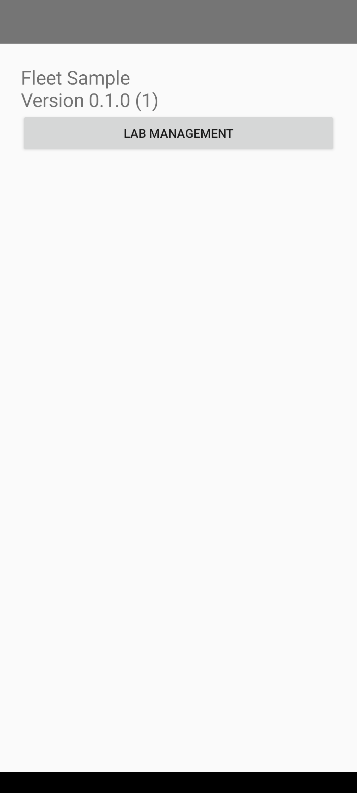
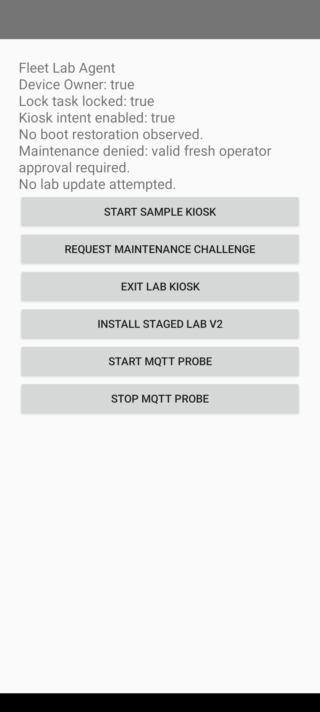

2026-10-16T12:07:11.931654+00:00 | emulator-5556 | failed
New recorded rerun of the lab checks. Assertions and command transcript
Command failed (137): /Users/michaelnwanna/Library/Android/sdk/platform-tools/adb -s emulator-5556 shell uiautomator dump /sdcard/fleet-evidence-window.xml ; recording finalization: Command '['/Users/michaelnwanna/Library/Android/sdk/platform-tools/adb', '-s', 'emulator-5556', 'shell', 'screenrecord', '--time-limit', '0', '--size', '540x1200', '/sdcard/fleet-runtime-evidence.mp4']' timed out after 20 seconds

